Hardelot 2009

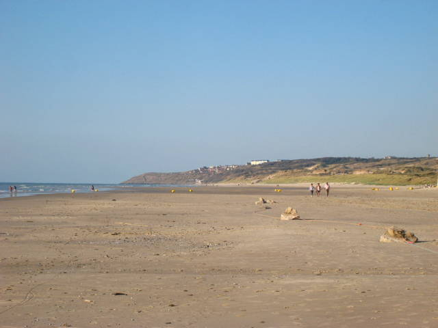
Je suis déjà allé à Hardelot mais il y a si longtemps que je n'arrive même plus à retrouver l'année dans mes archives... La plage est très belle, du beau sable à perte de vue... Bien sûr, des immeubles en rang d'oignon le long de la promenade, devant les villas plus anciennes, mais je préfère regarder de l'autre côté, vers le Nord et Le Touquet !

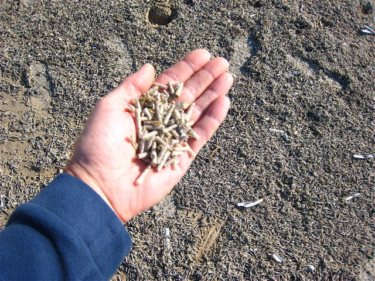
Sur le sable, plein de petits étuis d'animalcules qui rassemblent des débris de coquilles pour se protéger... des centaines, des milliers, peut-être des millions !

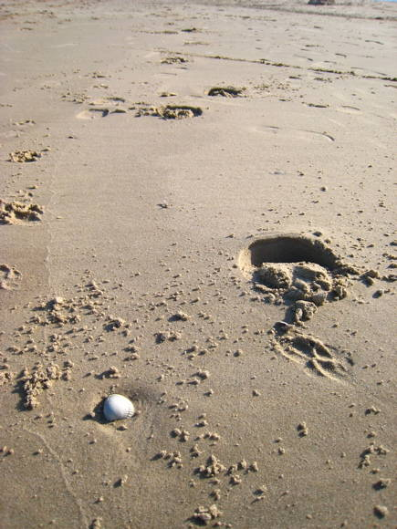
Des chevaux viennent y galoper sur la partie Nord, et Dimanche matin, deux calèches pleines de passagers sont même venues nous admirer !

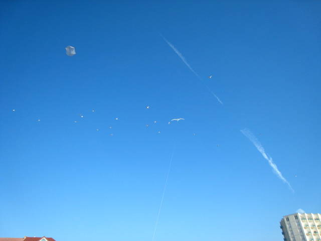
Arrivé vendredi, à l'heure où la brise de terre remplace la brise de mer après un moment sans vent, et en compagnie d'un Rokkaku tout neuf et pas encore décoré, je lance mon Spiralier-Goéland qui se défendra bien au milieu d'un vol de ses congénères !

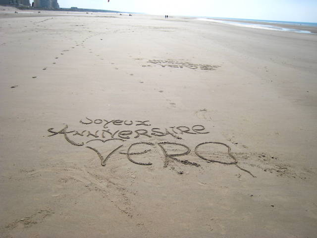
Un petit tour au bord de l'eau, où le sable dur, lisse et sec plaira aux rouleurs de chars... après avoir plu à un calligraphe amoureux !

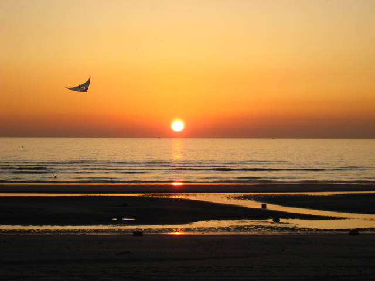
Le soleil se couche mais il reste encore des acharnés en l'air, sur la plage qui garde le souvenir miroitant de la marée descendante...

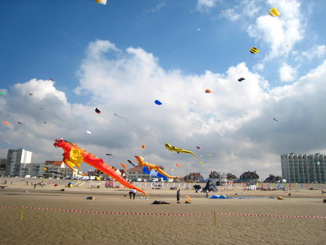
Samedi matin, même configuration, mais inversée : vent de terre et on ne pourra vraiment voler que quand la brise de mer sera établie, en fin de matinée ! Les Sens Ciel sont heureux, avec ce vent ils peuvent déployer leurs grosses structures comme le Dragon Bol-Z...

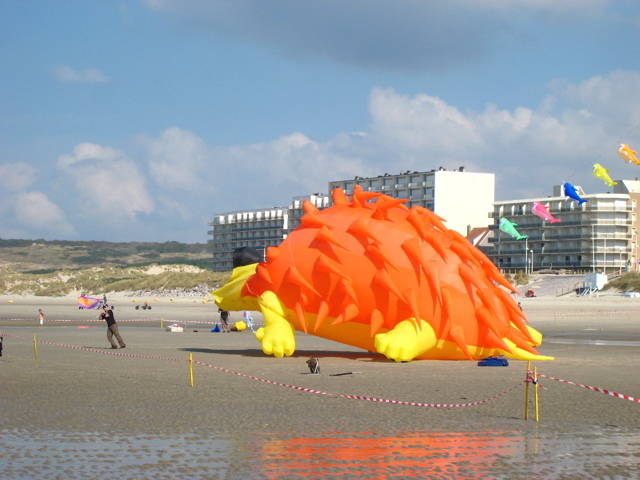
Jean-Paul tracte même le Hérisson pour lui donner un peu d'allant, et il se gonflera bien et longtemps !

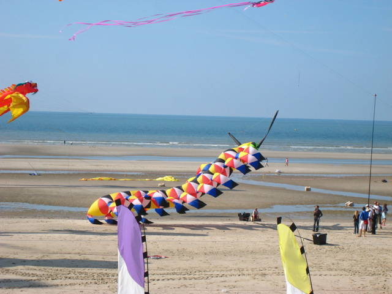
Les Anglais d'AKF ont amené une grosse chenille aux pattes multiples et colorées, un compromis puisqu'elle comporte des parties rigides qui permettent ces longues antennes !

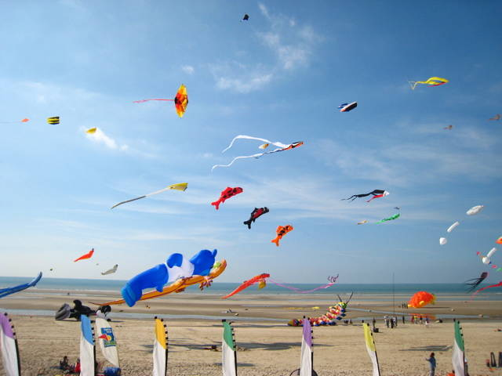
Le terrain est grand, mais il se meuble bien, peu à peu ! Des nounours, des geckos, des phoques, des hérissons, des poissons, et même de vrais cerfs-volants, sans porteurs...

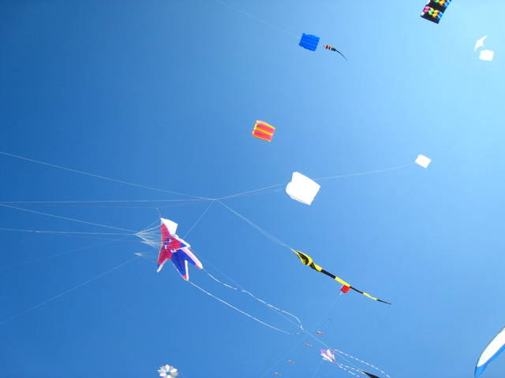
Le terrain se meuble même tellement que cela ne va pas sans un peu de macramé pour l'étoile de Thierry et ses voisins...

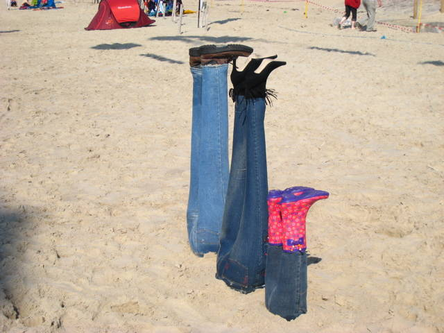
Et une partie de jambes en l'air... à trois. Ils resteront ainsi quel que soit le vent...

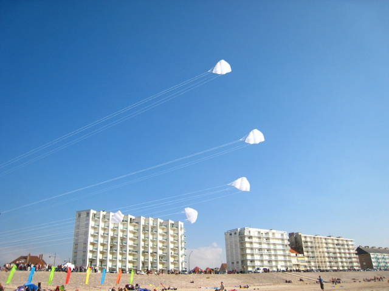
Les Pirates Air Line présenteront leur spectaculaire show de Nasas, de mieux en mieux rodé au fil des festivals...

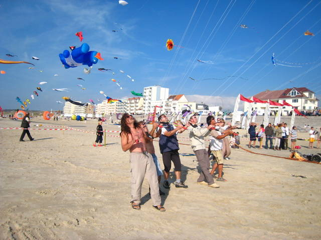
Et au sol, ça bosse, même si le vent ne décoiffe pas trop aujourd'hui !

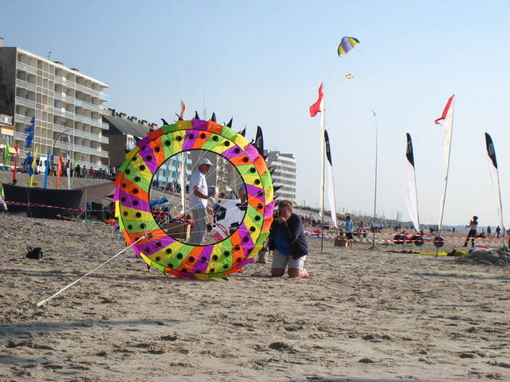
Au sol, Geneviève Vansnickt s'apprête à faire la photo du siècle à travers ce bol qui se déplace pourtant en tout sens...

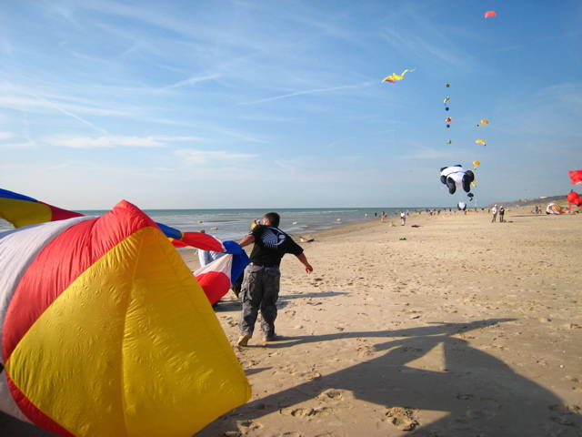
En fin d'après-midi, le vent a tendance à faiblir. Le maniement des gros gonflables est un travail d'homme... et il ne faut pas traîner, la mer monte vite !

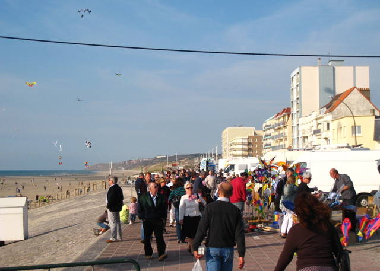
Mais avec ce beau temps et pas trop de vent, le public est venu en nombre voir le spectacle de ces gens étranges et farfelus...

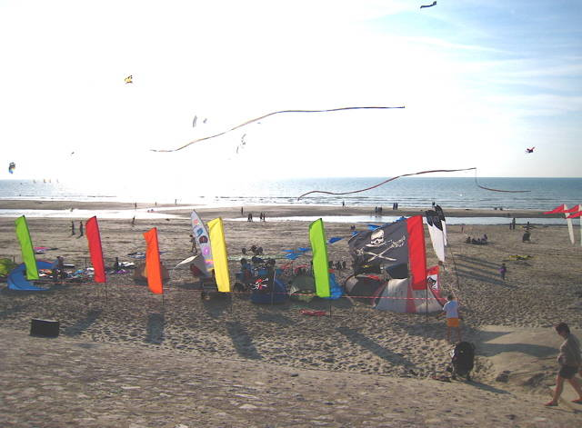
Comme d'habitude, les Pirates et les Gwenn-Ha-Du ont fraternisé et monté un camp commun, de leur côté du Poste de Secours...

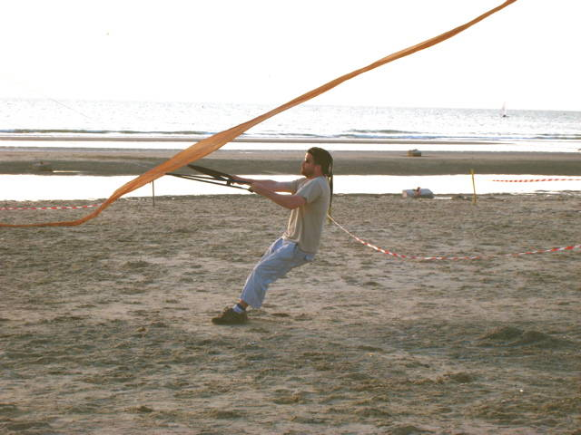
Malgré le peu de vent, Olivier se cramponne à son engin... Quoi-t-est-ce donc qui tire si fort ?

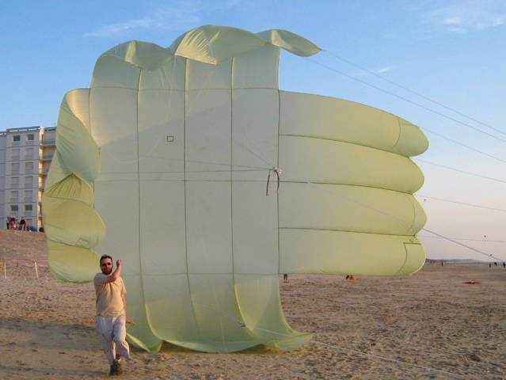
Eh bien, c'est un parachute de Drone au rebut, récupéré, qui a quand même une belle surface ! Il était très léger pour être emporté en vol et s'ouvrait pour la récupération parachutée.

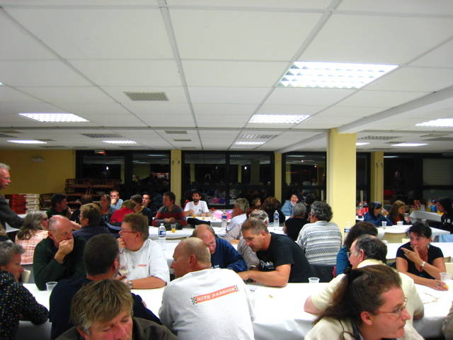
Repas du samedi soir dans une salle en ville. Au premier plan, la table des Anglais, venus en nombre...

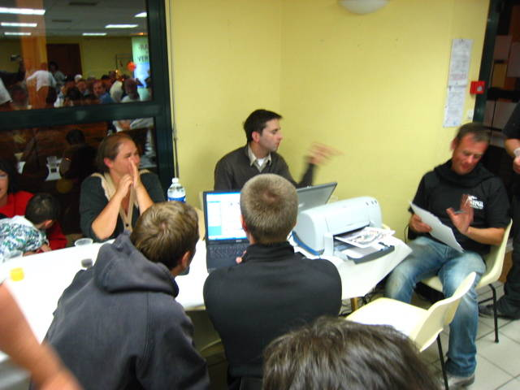
Dans un coin, le dépouillement et le jugement du concours de photo aérienne, la mise en ordinateur, l'impression des images, le classement...

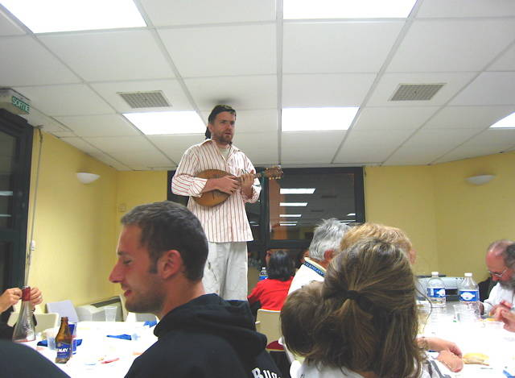
Olivier nous régale de chansons classiques, celtes, voire écrites par lui... Mais la bande de Pirates-Gwenn se fait un malin plaisir de lui saboter le travail...

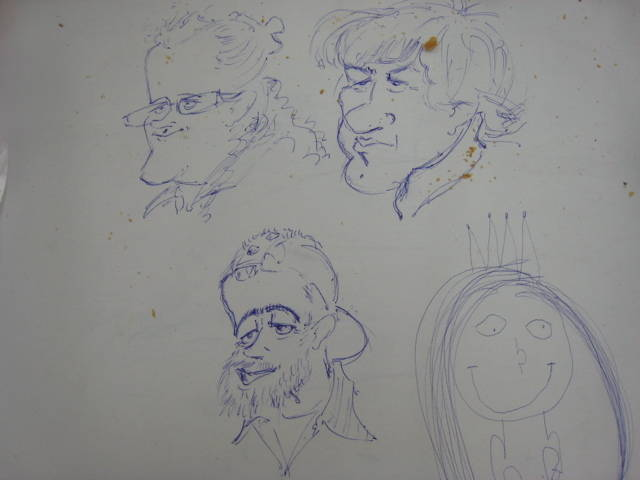
Et Jean-Paul se lance comme toujours dans des caricatures des présents. En bas, c'est Olivier !

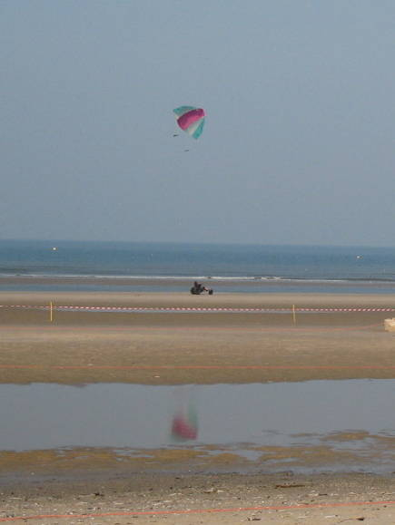
Dimanche matin, le vent de mer est plus long à arriver, mais il y a assez de vent de terre, et, bien toilé, on peut déjà rouler, le sable bien lisse et dur n'offrant pas de résistance...

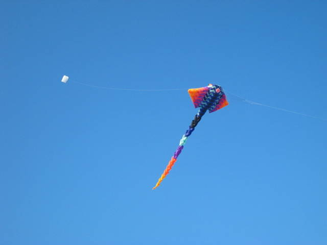
Après quelques tentatives, la raie Manta finir par s'établir, et pousse même bien sur sa ligne...

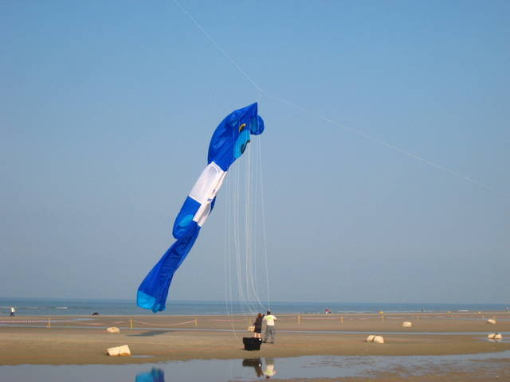
Par contre, le Blue Peter des Anglais est un peu faible des genoux...

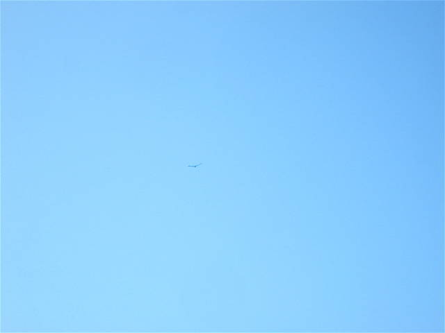
Dans la brise de terre qui commence à faiblir, je parviens quand même à monter mon Oiseau Bleu à 250 m ! Et pourtant, dans la renverse, je devrai tout amener !

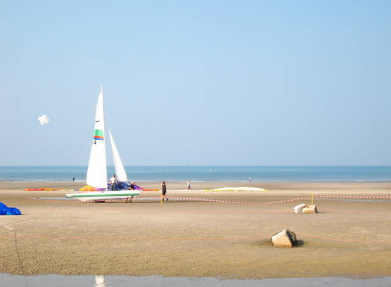
Dans le vent calme, un voilier passe sur la plage, c'est poétique... Lisez bien, je n'ai pas dit DEVANT la plage !

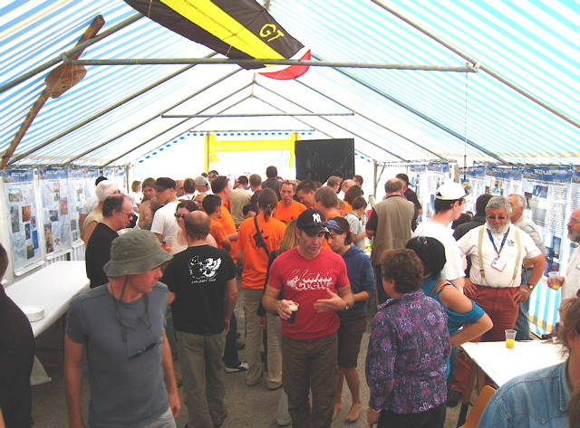
Bon, le vent a fermé, c'est le moment d'un petit apéritif offert sous le barnum... Sur les murs, des panneaux imprimés sur l'histoire du cerf-volant et sa technique...

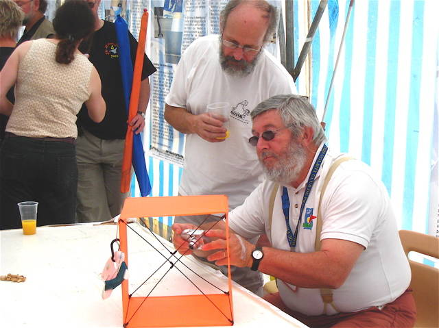
Gildas se lance dans l'espionnage industriel sur l'ingénierie des raccords... Pourtant je trouve que ceux-là coulissent un peu trop bien !

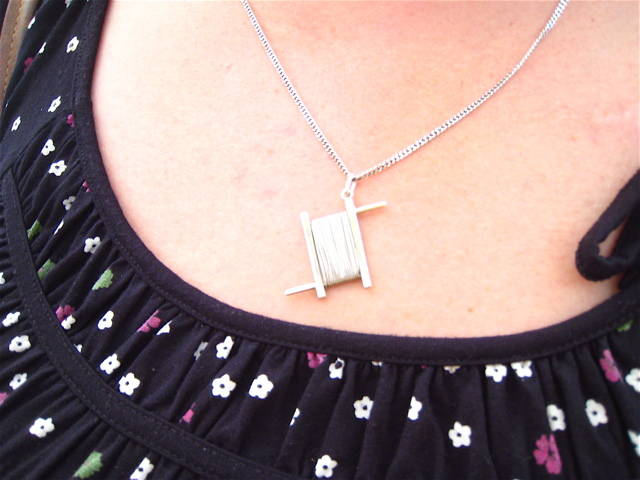
Cette dame a un joli collier orné... d'un dévidoir (en argent, quand même !). Elle a encore des boucles d'oreilles en Eddy et en argent aussi...

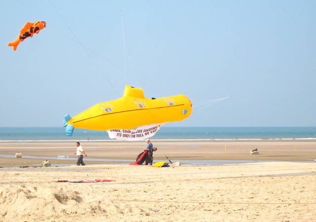
Sur la plage, un Yellow Submarine (en français, un Sous-marin Vert, vert comme la mer, sic) s'est gonflé !

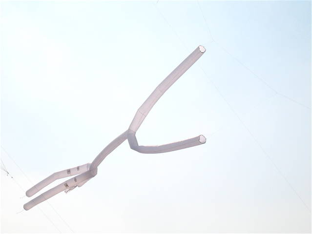
J'ai bien aimé cette manche à air bien gonflée et bifide (un bonhomme, peut-être ?), originale et esthétique. Elle aura un prix au concours, mais plus loin que je n'aurais pensé...

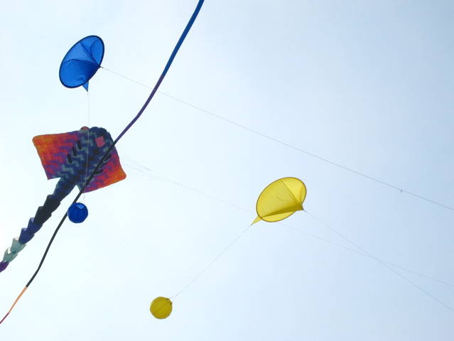
Sous la Manta, des chapeaux chinois volent, dont JC Veillerobe avait un exemplaire au Mans il y a 3 ou 4 ans !

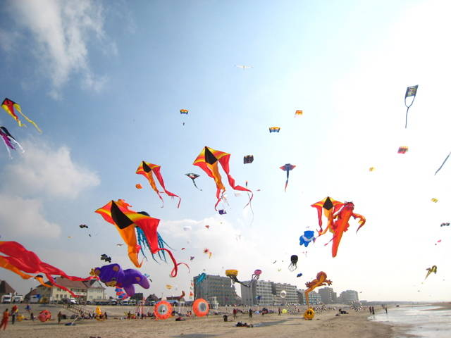
Les Anglais ont monté une escadrille de Pyrodeltas de feu, mais il y a aussi du monde derrière...

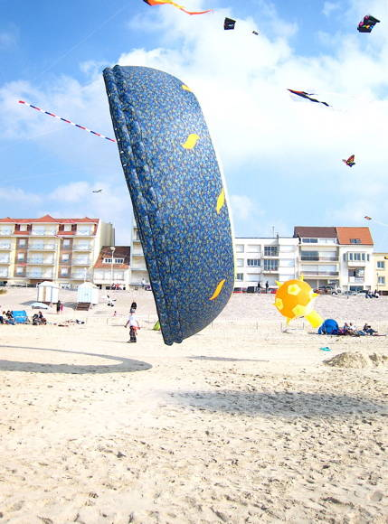
Ce bol est d'une taille impressionnante...

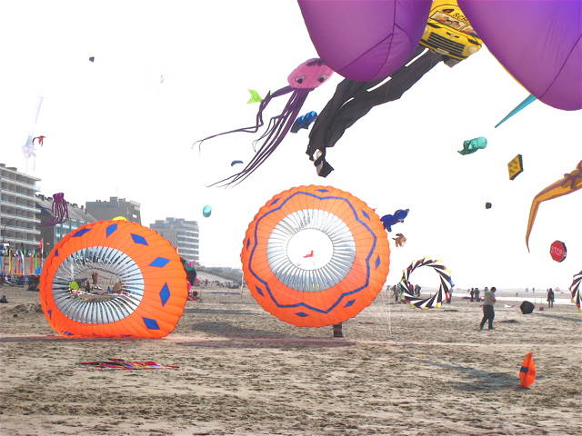
Et j'aime bien ceux-ci, avec leur ensemble de petites ailettes centrales...

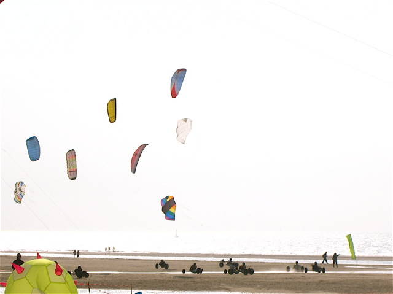
Mais j'ai failli rater le départ de la course de char montée par les Pirates et surtout par Yves ! Le départ vient d'être donné, l'ordre règne encore.

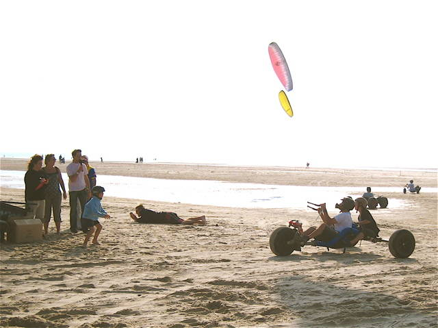
Tous les modèles de chars et de voiles sont autorisés, un concurrent a même un biplace... et un passager !

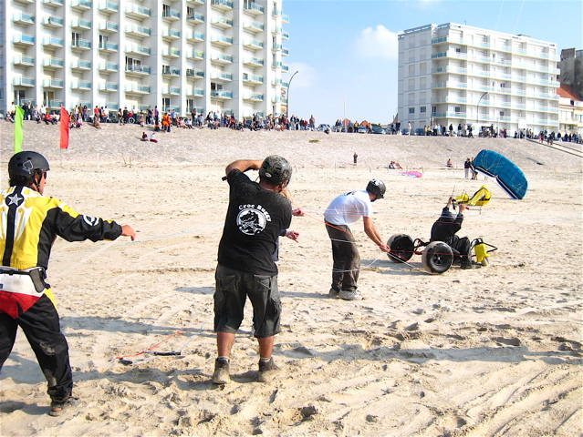
A la bannière haute, il faut rendre un ballon plein d'eau, et en prendre un autre en repartant. Evidemment, ça n'est pas facile, et la distraction occasionnée amène des emmêlages et des embouteillages...

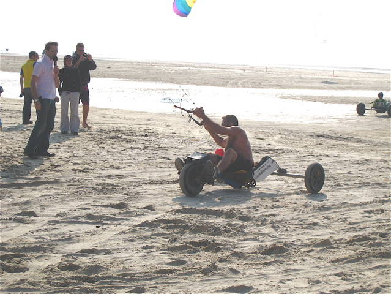
William est en train de larguer son ballon. Il terminera premier, mais comme il a toujours coupé le virage à l'intérieur de la bannière et manqué plusieurs ballons, il sera déclassé 8ème... Après l'arrivée, il reste un tas de ballons plein d'eau, il faut bien s'en débarrasser, ce qui dégénère vite en une joyeuse bataille de bombes à eau !

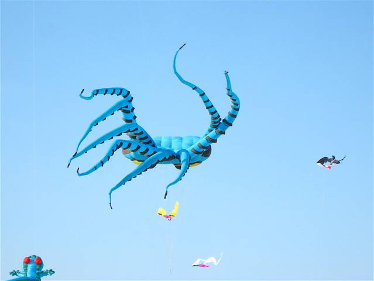
Pendant ce temps, les monofils continuent de monofiler, comme cette belle pieuvre bleue bien vivante...

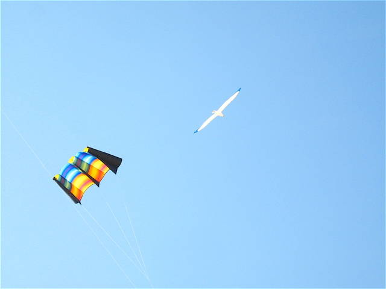
Mon Albatros 2 restera en l'air tout l'après-midi, pendant que je ferai le combat de Rokkaku, ou présenterai Megoel au concours de création..

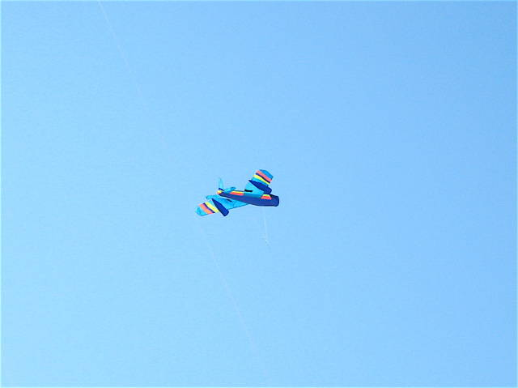
On voit même passer un biréacteur, qui restera bien longtemps dans le ciel pour un Jet...

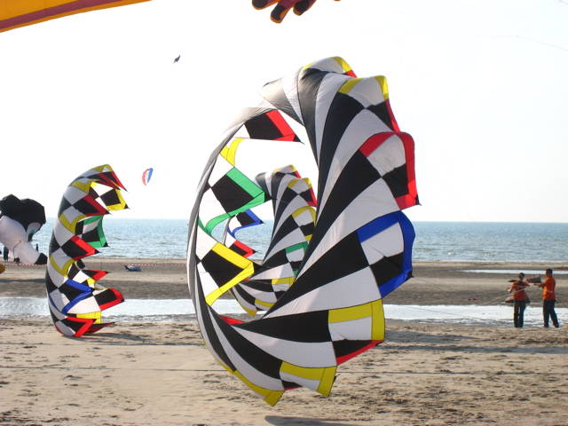
Sur le terrain, on peut encore admirer ce beau team de bols colorés tournant de conserve...

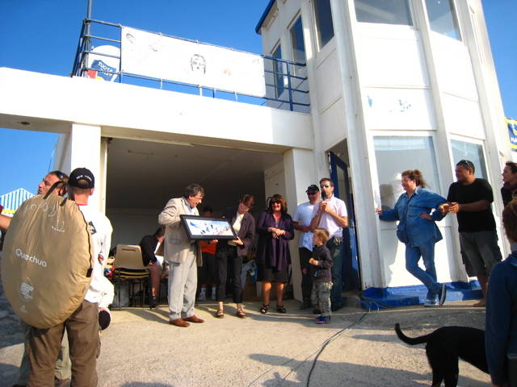
Au soir, remise des prix, patronnée par le Maire et la Directrice de l'Office de tourisme qui se voient remettre une belle photo panoramique regroupant des cerfs-volants...

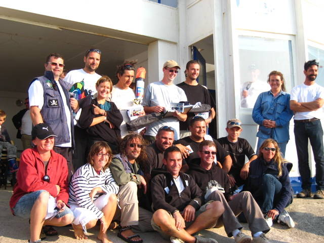
Course de chars : le gagnant est le grand avec la casquette, au fond, mais tous les participants et assistants se sont regroupés pour la photo...

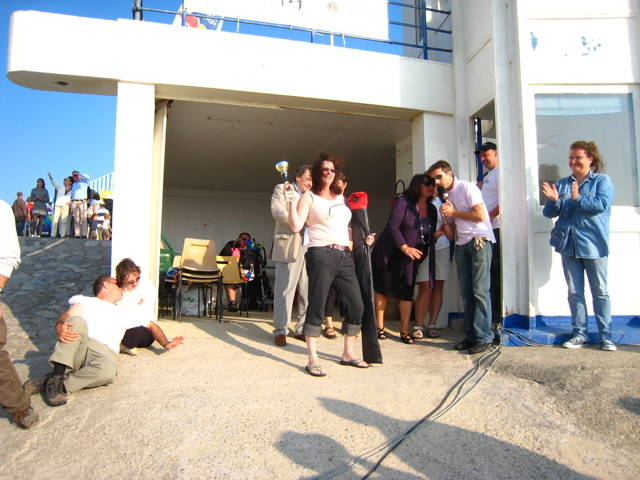
La gagnante du combat de Rokkaku est une anglaise, ils sont très branchés dans cette discipline. Je ferai seulement cinquième, bouh...

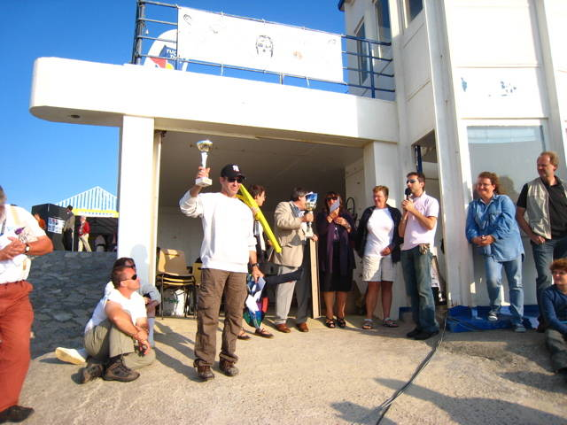
Au concours de création, c'est Jean-Paul, au nom des Sens Ciel qui est deuxième avec son dragon immense... J'ai présenté Megoel, pas tout neuf et je ferai encore 5ème... Re-bouh !

Le premier est Karl Longbottom avec ses colombes blanches en couple, découvertes (par moi) à Tours... Tout le monde s'y attendait, évidemment !

Allez, un dernier cerf-volant, un Pyrodelta dans le soleil qui le nimbe...

Je prends la route ensuite, pour faire un bout de chemin touristique dans l'arrière-pays splendide...

Je dors en route pour continuer mon tourisme au matin. Mais surprise, au matin, on n'y voit rien. Alors je rentre direct, tant pis...
Hardelot 2009 : Une très belle plage de sable clair et fin, bien lisse et dur pour les rouleurs de char ! L'organisation a été bien... organisée et le week-end parfait, météo et tout. Je n'étais pas venu depuis longtemps, mais je reviendrai !